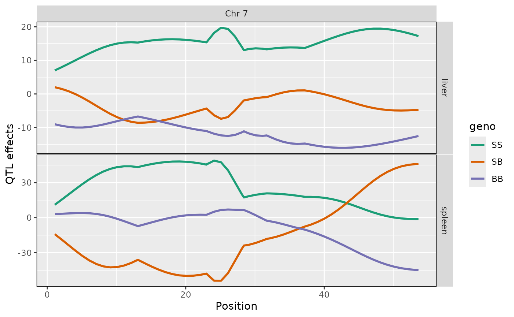

Create a list of scan1coef objects using scan1coef.
Summary of object of class listof_scan1coef, which is a list of objects of class scan1coef.
Summary of object of class listof_scan1coef, which is a list of objects of class scan1coef.
Subset of object of class listof_scan1coef,
which is a list of objects of class scan1coef.
Usage
listof_scan1coef(
probs,
phe,
K = NULL,
covar = NULL,
blups = FALSE,
center = FALSE,
...
)
summary_listof_scan1coef(
object,
scan1_object,
map,
coef_names = dimnames(object[[1]])[[2]],
center = TRUE,
...
)
# S3 method for class 'listof_scan1coef'
summary(object, ...)
summary_scan1coef(object, scan1_object, map, ...)
# S3 method for class 'scan1coef'
summary(object, ...)
subset_listof_scan1coef(x, elements, ...)
# S3 method for class 'listof_scan1coef'
subset(x, ...)
# S3 method for class 'listof_scan1coef'
x[...]Arguments
- probs
genotype probabilities object for one chromosome from
calc_genoprob- phe
data frame of phenotypes
- K
list of length 1 with kinship matrix
- covar
matrix of covariates
- blups
Create BLUPs if
TRUE- center
center coefficients if
TRUE- ...
ignored
- object
object of class
listof_scan1coef- scan1_object
object from
scan1- map
A list of vectors of marker positions, as produced by
insert_pseudomarkers.- coef_names
names of effect coefficients (default is all coefficient names)
- x
object of class
listof_scan1coef- elements
indexes or names of list elements in x
Author
Brian S Yandell, brian.yandell@wisc.edu
Examples
# read data
iron <- qtl2::read_cross2(system.file("extdata", "iron.zip", package="qtl2"))
# insert pseudomarkers into map
map <- qtl2::insert_pseudomarkers(iron$gmap, step=1)
# calculate genotype probabilities
probs <- qtl2::calc_genoprob(iron, map, error_prob=0.002)
# Ensure that covariates have names attribute
covar <- match(iron$covar$sex, c("f", "m")) # make numeric
names(covar) <- rownames(iron$covar)
# Calculate scan1coef on all phenotypes,
# returning a list of \code{\link[qtl2]{scan1coef}} objects
out <- listof_scan1coef(probs[,7], iron$pheno, addcovar = covar, center = TRUE)
# Plot coefficients for all phenotypes
ggplot2::autoplot(out, map[7], columns = 1:3)

# Summary of coefficients at scan peak
scan_pr <- qtl2::scan1(probs[,7], iron$pheno)
summary(out, scan_pr, map[7])
#> # A tibble: 2 × 10
#> pheno chr pos marker lod SS SB BB ac1 intercept
#> <chr> <fct> <dbl> <chr> <dbl> <dbl> <dbl> <dbl> <dbl> <dbl>
#> 1 liver 7 50.1 c7.loc50 4.05 -3.57 -27.5 -36.7 -55.3 123.
#> 2 spleen 7 53.6 D7Mit71 1.34 -91.0 -43.8 -135. -197. 466.